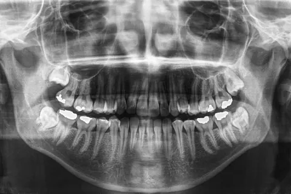

Wisdom tooth removal Nong Prue, Pattaya Surgery and extraction at Goody Dental Clinic, near Mitkamol intersection
Wisdom tooth pain, a swollen gum at the back, or told it has to come out? Get an X-ray at the clinic and the dentist tells you the cost before treatment. Thai Social Security can be used under its rules.

Wisdom tooth removal at a glance
- Paying yourself, from
- 1,500 baht per toothThe dentist confirms the real price after the X-ray.
- With a Thai scheme
- Social Security: separate from the 900 baht yearly limit, up to 1,500 baht per tooth for simple cases and up to 2,500 baht when bone is removed. The gold card does not cover it.
- Does it hurt?
- Local anaesthetic is used, so most people feel pressure rather than pain during surgery. There can be pain and swelling when it wears off; the dentist gives you medicine and aftercare instructions.
- Booking
- LINE @goodydentalclinic or call +66 65 165 5495. If you have an old X-ray, ask on LINE whether it can be used. The clinic lists Thai and English. Message us on LINE in English and say you would like English when you book.
- Time and recovery
- Typically, surgery takes about 20 to 60 minutes per tooth. Swelling is usually worst in the first 2 to 3 days, and most pain settles within 7 to 10 days. Stitches come out 7 to 14 days later. Most people can do normal work afterwards but should avoid heavy exercise. The dentist will tell you your own recovery time after the X-ray.
Wisdom tooth removal cost, and what Thai schemes cover
The price depends on the tooth position, depth and how close it is to the nerve. The dentist reviews the X-ray and tells you the full cost before surgery.
- Wisdom tooth surgery, buried or tilted
- Paying yourself, from1,500 baht per tooth, starting price, depends on difficulty
- With a Thai scheme Social Security: up to 1,500 baht per tooth for simple cases, up to 2,500 when bone is removed, separate from the 900 baht yearly limit
- The dentist reviews the X-ray and tells you the full cost before surgery.
- Extraction of a straight, erupted wisdom tooth
- Paying yourself, fromQuoted after the check-up
- With a Thai scheme Social Security: uses the 900 baht yearly limit
- A straight, fully erupted tooth comes out without opening the gum.
- Gold card
- Paying yourself, fromNot covered for wisdom tooth surgery
- With a Thai scheme Covers scaling, fillings and extractions
- Ask us on LINE about your cover before you book.
Prices in Thai baht. The dentist tells you the full cost before surgery.
If the clinic is a Social Security contract provider, it bills Social Security directly and you pay nothing up front within the limit; if not, you pay first and claim the money back through SSO e-Self Service or an SSO office. Ask us on LINE which applies to wisdom tooth surgery here before you book.
Starting prices. The dentist confirms the final price after an exam.
Chat with us on LINE firstSteps, from X-ray to stitch removal
- Check-up and X-rayThe dentist examines your mouth and takes an X-ray of the tooth and nerve. A 3D X-ray is used when the roots are close to the nerve.
- Plan and priceThe dentist explains the method, the risks and the cost before you decide.
- Anaesthetic and surgeryLocal anaesthetic. Usually about 20 to 60 minutes per tooth, depending on difficulty.
- Medicine and instructionsYou get the medicine the dentist prescribes and written aftercare.
- Stitch removalTypically 7 to 14 days after surgery, with a wound check.

Patient reviews
Read what patients wrote themselves on the clinic's Facebook page and Google Maps.
When does a wisdom tooth need to come out?
An impacted wisdom tooth cannot come through normally because it is blocked by the tooth in front, by bone or by gum. Not every wisdom tooth has to be removed; the dentist decides from your symptoms and the X-ray. A straight, fully erupted tooth is simply extracted, without opening the gum.

The drawings show the second molar (black outline) and the wisdom tooth (green outline). The dashed line is the top of the bone.
Partly through the gum
- In the mouth:
- Part of the tooth shows, with gum over the rest
- Common problems:
- Food gets trapped, the gum around it gets inflamed
Tilted forward
- In the mouth:
- The tooth leans into the second molar
- Common problems:
- Decay where the two teeth touch
Lying sideways
- In the mouth:
- Usually not visible
- Common problems:
- Pushes on the next tooth's root, pain that comes and goes
Fully in the bone
- In the mouth:
- Not visible, needs an X-ray
- Common problems:
- Often no symptoms, usually monitored
Dentists usually suggest removal when
- The gum around it swells or gets infected again and again
- The wisdom tooth or the second molar is decayed
- There is a cyst, abscess or damage to the next tooth's root
- Food keeps getting trapped and you cannot clean it
- You are planning braces or dentures
It can often be monitored when
- It has come through fully, stands straight and you can brush it
- It is fully in the bone with no symptoms and no cyst
- It is very close to the nerve and removal carries more risk than benefit
Monitoring means regular check-ups and repeat X-rays.
Benefits and side effects to know first
After the tooth is out
- Less chance of repeated pain or gum infection from that tooth
- The second molar is easier to clean
- Lower risk of decay in the neighbouring tooth
Possible side effects
- Pain, swelling, bruising and a stiff jaw in the first 2 to 3 days
- Some bleeding from the wound on the first day
- Dry socket: pain getting worse after day 2 to 4, more common in smokers
- Infection, with pus, a bad taste or fever
- Numb lip, chin or tongue, uncommon, when the roots are close to the nerve
Aftercare
- Bite firmly on the gauze for as long as the dentist tells you
- Use a cold pack on the cheek in the first 24 hours
- Avoid strong rinsing, straws and smoking at first
- Eat soft food that is not too hot, and take the medicine as prescribed
- Brush as normal, avoiding the wound
- Normal work is usually fine; avoid heavy exercise
Go to hospital straight away if
- Swelling spreads quickly under the eye, to the neck or under the chin
- You have trouble breathing, swallowing or speaking
- You have a high fever, shivering or feel very weak
These can be signs of a spreading infection. Do not wait for a clinic appointment.
Wisdom tooth questions
How much is wisdom tooth removal?
At Goody Dental Clinic, if you pay yourself it starts from 1,500 baht per tooth. The real price depends on the position and difficulty seen on the X-ray, and the dentist confirms the real price after the X-ray, before starting.
Does it hurt?
The dentist numbs the area with local anaesthetic, so most people feel pressure rather than pain during surgery. When the numbness wears off there can be pain and swelling. The dentist gives you medicine and aftercare instructions. Everyone feels it differently.
Can I use Thai Social Security for wisdom tooth surgery?
Yes. Since 1 May 2026, insured people under Section 33 and 39 have a wisdom tooth limit separate from the 900 baht yearly dental limit: up to 1,500 baht per tooth for simple cases and up to 2,500 baht per tooth when bone has to be removed. If the clinic is a Social Security contract provider, it bills Social Security directly and you pay nothing up front within the limit; if not, you pay first and claim the money back through SSO e-Self Service or an SSO office. Ask us on LINE which applies to wisdom tooth surgery here before you book.
Does the gold card cover it?
The gold card at the clinic covers scaling, fillings and extractions. Wisdom tooth surgery is not covered. Message us on LINE first to check your cover.
How long does it take, and do I need time off work?
Usually about 20 to 60 minutes per tooth, depending on difficulty. Most people can do normal work afterwards but should avoid heavy exercise. The dentist will tell you your own timing after the X-ray.
How long is recovery?
Swelling is usually worst in the first 2 to 3 days and then goes down. Most pain settles within 7 to 10 days. Stitches usually come out 7 to 14 days after surgery. Harder cases take longer to heal.
What is the difference between extraction and surgery?
A simple extraction is for a wisdom tooth that has fully come through and stands straight. Surgery is for a tooth in the bone or tilted: the dentist opens the gum, may remove some bone and cut the tooth into pieces, then stitches the wound. Both are done under local anaesthetic.
Can several wisdom teeth come out at once?
Often, yes. Dentists commonly remove the upper and lower teeth on the same side in one visit, so you can still chew on the other side. How many at once depends on the difficulty and your health.
I am pregnant. Can I have a wisdom tooth removed?
Non-urgent procedures are usually postponed until after the birth. If there is an infection, the dentist treats it first and chooses medicines that are suitable in pregnancy. Always tell the dentist how far along you are.
This page is general information, not a diagnosis. See a dentist before deciding on treatment.
Book a wisdom tooth check in Pattaya
Goody Dental Clinic คลินิกทันตกรรมกู๊ดดี้222/20 Phon Prapha Nimit Road, Nong Prue, Bang Lamung, Chon Buri 20150
Near Mitkamol intersection, parking in front of the clinic
Open daily until 20:00
| Monday to Friday | 10:00 to 20:00 |
|---|---|
| Saturday and Sunday | 09:30 to 20:00 |

Message us on LINE with what is wrong and which cover you have, and we will find you a time. You can also call during opening hours.